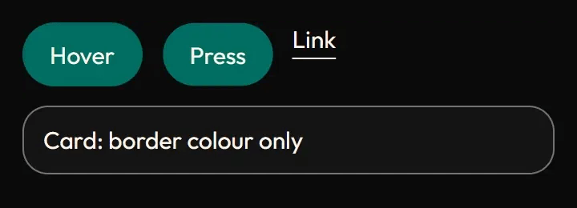
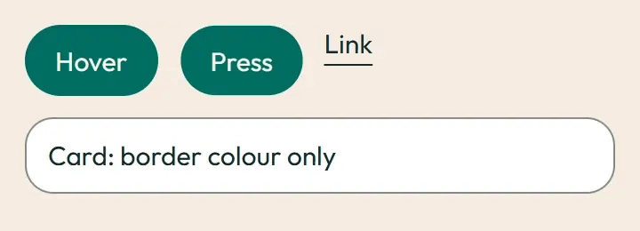

Hover and press
Hover and press (hold the mouse down) each control: only colour changes; buttons sink to 0.98 while pressed. Under prefers-reduced-motion: reduce the motion is removed and the end state shows at once.
Card
Border colour eases in on hover.
Row one
Row two
Link underlineImage previews
Static posters are shown first. Play starts an animated image; Pause restores its poster. Reduced motion keeps posters visible.


Easing at token duration
Each Play button reverses its dot from its current position. The duration is the slow token (240 ms at the default scale).